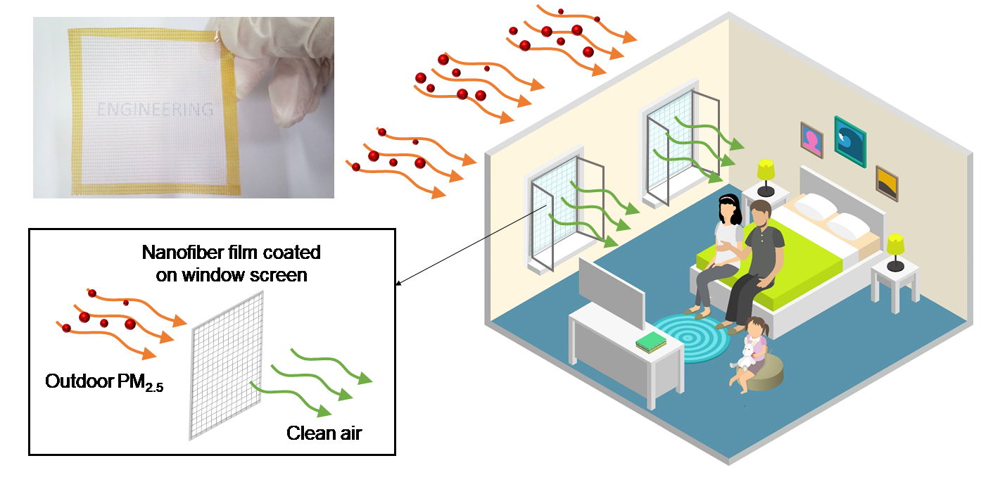
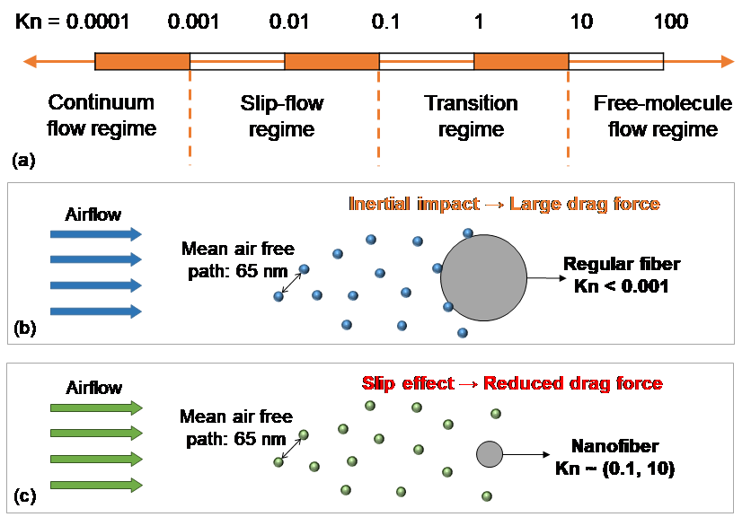
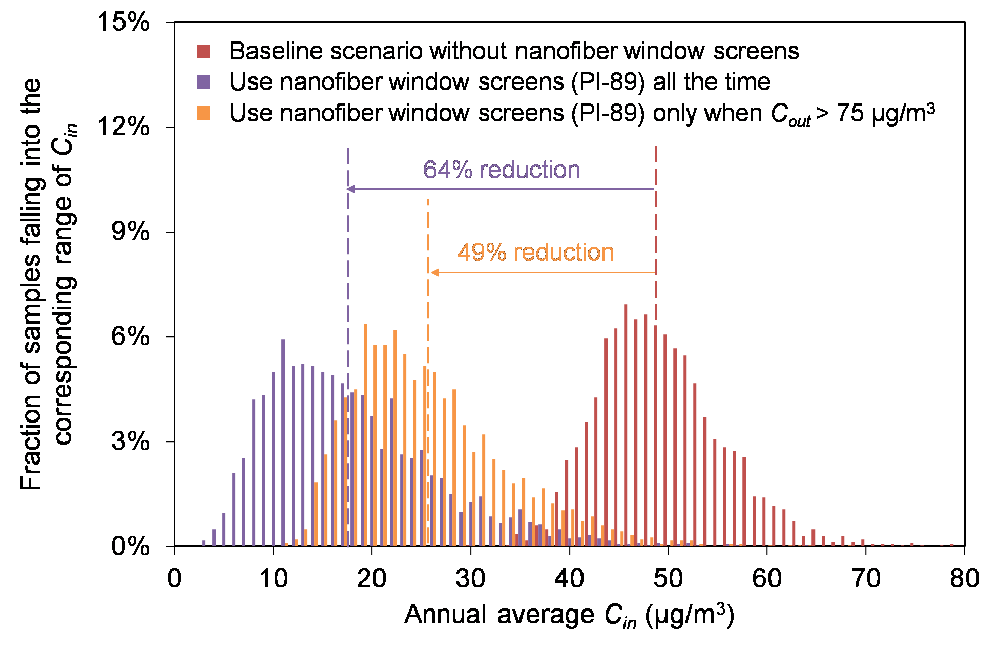
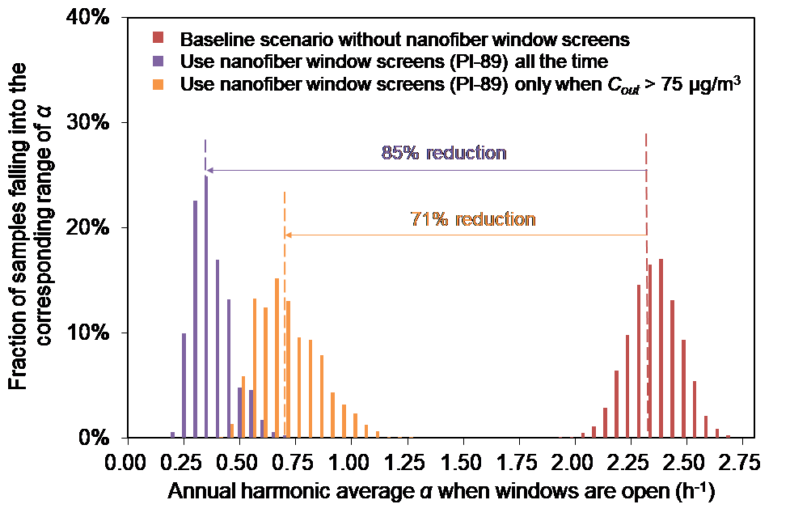

绿色建筑与城市环境国际研究中心
International Research Center for
G
reen
B
uildings &
U
rban
E
nvironment
当前位置：首页 > 学术动态
《Indoor Air》报道助理研究员施珊珊关于纳米薄膜纱窗对室内环境影响的最新研究成果正式发布
发布时间：2017年11月16日
室内装修污染在我国新建建筑中普遍存在，但目前的控制手段主要是依据对装修完成后的后评估结果而展开的，不仅治理整改费用高，效果也十分有限。
我院助理研究员施珊珊与香港中文大学研究人员合作，针对新进发展的纳米纤维薄膜纱窗对室内环境的影响展开研究，评估不同纳米纤维薄膜种类、使用策略对建筑室内PM2.5浓度及建筑通风的影响，可作为过滤应用纳米纤维薄膜进一步发展的指导参考。相关研究成果于11月发表在国际期刊《Indoor Air》上（Indoor Air, 2017, 27(6):1190-1200），系我校研究人员首次在此期刊发表论文。《Indoor Air》为建筑环境领域顶级期刊，影响因子4.383，排名建造及建筑工程领域第三位。论文第一作者为助理研究员施珊珊，通讯作者为香港中文大学助理教授陈淳。

我国正面临严峻的大气污染问题，大气中的PM2.5会随着建筑通风换气进入到室内环境中。人们趋向于关闭外窗以减小室外污染对室内环境的影响。在此情况下，通风换气量会远小于国家标准，无法有效排出室内来源污染物。纳米科学领域新进发展的纳米纤维薄膜可被用作空气过滤介质，对于某些透光性较好的纳米县额外薄膜，可被用作建筑纱窗，用于过滤室外进入室内的PM2.5，降低室内PM2.5浓度水平。

纳米纤维薄膜一般基于不同原材料，通过静电纺丝技术制成。由于纳米纤维直径较小，和空气分子平均自由程接近，所对应的努森数（Kn）较大，纤维表面空气流速不再是0，在空气滑移效应的作用下拖曳力减小，从而导致纳米纤维薄膜有着相对较小的空气阻力。因此，纳米纤维薄膜纱窗可能可以在具有PM2.5高效去除效果的同时保证建筑通风换气量在可接受的水平。
该研究基于颗粒物动力学特性及建筑通风理论建立模型，评估实验室制备纳米纤维薄膜在实际应用中对建筑室内PM2.5浓度及建筑通风的影响。通过对三种新进发展的纳米纤维薄膜纱窗在北京市住宅中实际应用效果的评估可以发现，使用纳米纤维薄膜纱窗可以有效降低室外PM污染对室内环境的影响，室内PM2.5浓度年均值可下降64%-66%。同时，纳米纤维薄膜纱窗的使用也使得建筑自然通风换气次数显著降低。全时段使用纳米纤维薄膜纱窗可导致平均自然通风换气次数下降85%到88%；仅在室外PM2.5浓度超标时使用纳米纤维薄膜纱窗可减小其对建筑通风的影响，但其所对应的平均自然通风换气次数仍无法达到国家标准。
 
该研究表面，纳米纤维薄膜具有被作为建筑纱窗的应用前景，可有效降低室外PM2.5浓度污染对室内环境的影响。然而现阶段纳米纤维薄膜的阻力仍旧过大，在自然通风的情况下，纳米纤维薄膜纱窗无法满足建筑通风需求。纳米技术有待进一步降低薄膜的空气阻力，使其满足自然条件下的建筑通风需求。
此研究得到中国科技部国家重点研发计划“绿色建筑及建筑工业化”支持下的重点专项“居住建筑室内通风策略与室内空气质量营造”和香港中文大学直接资助基金的资助支持，在此表示感谢。
论文名称 ： A method for assessing the performance of nanofiber films coated on window screens in reducing residential exposures to PM2.5 of outdoor origin in Beijing (
http://onlinelibrary.wiley.com/doi/10.1111/ina.12391/full
)。
@Copyright2019 南京大学绿色建筑与城市环境国际研究中心 地址:江苏省南京市汉口路22号南京大学鼓楼校区
友情链接： 南京大学； 南京大学研究生院； 南京大学建筑与城市规划学院